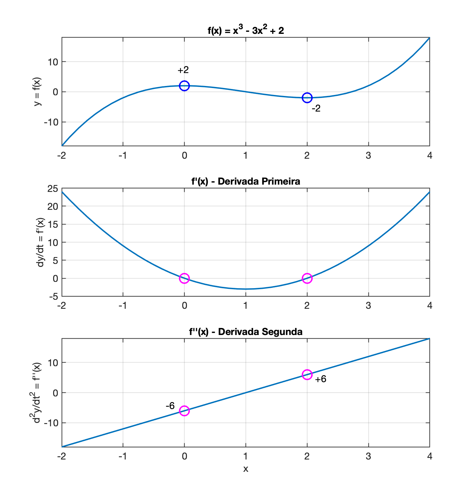

Detectores de Picos
Detectores de PicosIntroduçãoPrincipais insightsDerivada PrimeiraDerivada SegundaExemploExemplo de códigosAlgoritmoImplementação em MATLABCódigo considerando Espaçamento MínimoExplicaçãoExemplo em CExplicação2a-Versão MatlabConsiderando "vales de descida"Exemplo em MATLABExplicaçãoTesteExemplo em CExplicaçãoOutros MétodosConclusionReferências
Introdução
A detecção de picos em sinais ruidosos é uma tarefa crítica em diversas aplicações científicas e de engenharia. Algoritmos baseados na primeira e segunda derivadas são comumente usados para identificar picos, detectando mudanças na inclinação do sinal. Esses métodos devem lidar com ruído de maneira eficaz e distinguir picos verdadeiros de flutuações aleatórias.
Principais insights
Metodos baseados em Derivada primeira e segunda:
- Algoritmos que utilizam a primeira e a segunda derivadas são eficazes na identificação de picos, detectando cruzamentos de zero e mudanças na inclinação do sinal. Esses métodos podem ser scuceptíveis ao ruído, o que exige técnicas adicionais para melhorar a precisão, [1][1] [2][2] [4][4].
Seguem maiores exmplicações.
Derivada Primeira
Encontrar os Pontos Críticos:
- A derivada primeira de uma função , denotada por , representa a taxa de variação da função.
- Para encontrar os pontos críticos, você deve resolver . Esses pontos são onde a inclinação da função é zero, ou seja, onde a função pode ter um máximo, mínimo ou ponto de inflexão.
Teste da Derivada Primeira:
- Após encontrar os pontos críticos, você pode usar o sinal de antes e depois desses pontos para determinar se eles são máximos ou mínimos.
- Se muda de positivo para negativo ao passar por um ponto crítico, esse ponto é um máximo local.
- Se muda de negativo para positivo, o ponto crítico é um mínimo local (1).
Derivada Segunda
Teste da Derivada Segunda:
- A derivada segunda de uma função , denotada por , fornece informações sobre a concavidade da função.
- Avalie nos pontos críticos encontrados anteriormente.
- Se em um ponto crítico, a função é côncava para cima nesse ponto, indicando um mínimo local.
- Se , a função é côncava para baixo, indicando um máximo local (2).
Exemplo
Vamos considerar uma função: . Um gráfico na região resulta:

Derivada Primeira: :
- Encontramos os pontos críticos resolvendo: , o que dá e .
Teste da Derivada Primeira:
- Para : muda de negativo para positivo, indicando um mínimo local.
- Para : muda de positivo para negativo, indicando um máximo local.
Derivada Segunda:
Avaliando nos pontos críticos:
- Para : (máximo local).
- Para : (mínimo local).
Determinando valor pontos de mínimo e máximo
- Para : (ponto de máximo);
- Para : (ponto de mínimo).
Gráficos resumo abaixo:

Exemplo de códigos
Entendi, em um sistema embarcado com memória limitada, você pode implementar um algoritmo eficiente que utiliza as derivadas primeira e segunda para identificar máximos e mínimos locais em tempo real, sem a necessidade de armazenar muitos pontos. Aqui está uma abordagem que pode ser útil:
Algoritmo
Pseudo-código:
xxxxxxxxxxinicializar prev_y = 0, prev2_y = 0, prev_dy = 0T = intervalo de amostragem​para cada nova amostra y(t) faça:% Calcular a derivada primeira (aproximação)dy = (y(t) - prev_y) / T% Calcular a derivada segunda (aproximação)ddy = (dy - prev_dy) / T% Verificar condições para máximo localse prev_dy > 0 e dy < 0 entãoimprimir "Máximo local encontrado em t =", t-T, "com valor", prev_y% Verificar condições para mínimo localse prev_dy < 0 e dy > 0 entãoimprimir "Mínimo local encontrado em t =", t-T, "com valor", prev_y% Atualizar variáveis para a próxima iteraçãoprev2_y = prev_yprev_y = y(t)prev_dy = dyfim para
Explicação do Algoritmo:
Inicialização:
prev_yeprev2_yarmazenam os valores das amostras anteriores.prev_dyarmazena a derivada primeira da amostra anterior.
Loop de Aquisição de Dados:
A cada nova amostra
y(t), calcule a derivada primeiradycomo a diferença entre a amostra atual e a anterior, dividida pelo intervalo de amostragemT.Calcule a derivada segunda
ddycomo a diferença entre a derivada primeira atual e a anterior, dividida porT.Verifique as condições para máximos e mínimos locais:
- Um máximo local é identificado se a derivada primeira muda de positiva para negativa.
- Um mínimo local é identificado se a derivada primeira muda de negativa para positiva.
Atualize as variáveis (associadas com amostras passadas) para a próxima iteração.
Implementação em MATLAB
Aqui está uma implementação em MATLAB baseada no pseudo-código acima:
xxxxxxxxxx% Inicializar variáveisprev_y = 0;prev2_y = 0;prev_dy = 0;T = 0.1; % Intervalo de amostragem (segundos)​% Simulação de aquisição de dadosnum_samples = 100; % Número de amostras a serem simuladasfor i = 1:num_samples % Simular aquisição de um novo ponto t = (i-1) * T; y = sin(t) + 0.5*randn; % Sinal com ruído % Calcular a derivada primeira (aproximação) dy = (y - prev_y) / T; % Calcular a derivada segunda (aproximação) ddy = (dy - prev_dy) / T; % Verificar condições para máximo local if prev_dy > 0 && dy < 0 fprintf('Máximo local encontrado em t = %.2f com valor %.2f\n', t-T, prev_y); end % Verificar condições para mínimo local if prev_dy < 0 && dy > 0 fprintf('Mínimo local encontrado em t = %.2f com valor %.2f\n', t-T, prev_y); end % Atualizar variáveis para a próxima iteração prev2_y = prev_y; prev_y = y; prev_dy = dy; pause(T); % Pausar simulando aquisição em tempo realendEste algoritmo deve funcionar bem em um sistema embarcado com memória limitada, processando cada nova amostra em tempo real para identificar máximos e mínimos locais.
Código considerando Espaçamento Mínimo
Este exemplo em MATLAB detecta os picos em tempo real, processando dados de forma incremental, sem a necessidade de armazenar todo o sinal, atualizando as variáveis pico e distancia entre os últimos picos detectados conforme novos pontos de dados são "lidos". A detecção de picos usa a primeira e a segunda derivada, ao mesmo tempo em que leva em conta o ruído, deixando “espaço” (ou seja, tolerância) para vales e picos suaves (verificando existência de um espaçamento mínimo).
xxxxxxxxxx% detecta_picos.m% Fernando Passold, em 24/10/2024% Inicialização de variáveispico = NaN; % Valor do último pico detectadodistancia = NaN; % Distância entre o último e o penúltimo pico (em amostras)ultimoPicoIdx = NaN; % Índice do último pico detectadoanterior = 0;​​% Parâmetros de detecçãomin_spacing = 10; % Espaçamento mínimo entre picos em número de amostrasthreshold = 0.1; % Limite mínimo da derivada para ignorar ruídos​​% Simulação de captura de dados em tempo realfigure; % Abre nova janela gráficaH = gcf; % returns the handle of the current figurek = 0;clear x yfor t = 1:150 % Exemplo de loop simulando captura contínua % Simulação de um novo ponto de dado com ruído novo_ponto = sin(2 * pi * t / 100) + 0.2 * randn(); x(t) = t; y(t) = novo_ponto;​ figure(H); plot(x, y, 'b-'); if t > 2 % Calcular primeira e segunda derivadas com os últimos três pontos dy = novo_ponto - anterior; dy_prev = anterior - anterior2; d2y = dy - dy_prev; % Verificar se o ponto atual é um pico if dy_prev > 0 && dy < 0 && abs(dy_prev) > threshold && d2y < 0 % Verificar espaçamento mínimo if isnan(ultimoPicoIdx) || (t - ultimoPicoIdx) >= min_spacing % Atualizar variáveis de pico e distância distancia = t - ultimoPicoIdx; pico = novo_ponto; ultimoPicoIdx = t; hold on; plot(x(end-1),y(end-1),'ro') aux=num2str(distancia, '%d'); text(x(end-1), y(end-1)+0.1, aux); fprintf('Pico detectado: %f, Distância: %d amostras\n', pico, distancia); aux = input('Tecle <ENTER> para continuar'); end end end % Atualizar os valores anteriores anterior2 = anterior; anterior = novo_ponto;endhold on;rectangle('Position', [t*0.72, -1, min_spacing, 0.1], 'FaceColor',[0 0.8 0.95])aux=num2str(min_spacing, '%d');aux=[ 'min\_spacing = ' aux];text(t*0.72, -1.1, aux)Explicação
- Primeira e segunda derivadas: Calculadas usando diferenças entre os últimos três pontos capturados.
- Detecção de pico: Verifica zero-crossing (mudança de sinal) da primeira derivada e que a segunda derivada seja negativa.
- Controle de ruído: Usa um limite (
threshold) para evitar picos falsos. - Atualização em tempo real: As variáveis
picoedistanciasão atualizadas sempre que um novo pico é detectado.
Exemplo de uso:
xxxxxxxxxx>> detecta_picosPico detectado: 0.083061, Dist√¢ncia: NaN amostrasTecle <ENTER> para continuarPico detectado: 1.081005, Dist√¢ncia: 12 amostrasTecle <ENTER> para continuarPico detectado: 1.427308, Dist√¢ncia: 12 amostrasTecle <ENTER> para continuarPico detectado: 0.705388, Dist√¢ncia: 11 amostrasTecle <ENTER> para continuarPico detectado: -0.219932, Dist√¢ncia: 13 amostrasTecle <ENTER> para continuarPico detectado: -0.700761, Dist√¢ncia: 12 amostrasTecle <ENTER> para continuarPico detectado: -1.034320, Dist√¢ncia: 11 amostrasTecle <ENTER> para continuarPico detectado: -0.667690, Dist√¢ncia: 11 amostrasTecle <ENTER> para continuarPico detectado: -0.224956, Dist√¢ncia: 11 amostrasTecle <ENTER> para continuarPico detectado: 0.601979, Dist√¢ncia: 11 amostrasTecle <ENTER> para continuarPico detectado: 1.268751, Dist√¢ncia: 12 amostrasTecle <ENTER> para continuarPico detectado: 0.899890, Dist√¢ncia: 12 amostrasTecle <ENTER> para continuarPico detectado: -0.162192, Dist√¢ncia: 13 amostrasTecle <ENTER> para continuar>>
Note:

Este algoritmo não detecta um "vale de descida" com largura mínima entre 2 possíveis pontos.
Exemplo em C
Na versão C, o código processa cada novo ponto capturado em tempo real, atualizando as variáveis pico e distancia de acordo com os mesmos critérios de detecção de pico usando derivadas.
xxxxxxxxxx​// Espaçamento mínimo entre picos em número de amostras// Limite mínimo para a derivada​// Variáveis globais para controle de pico e distânciadouble pico = NAN;int distancia = 0;int ultimoPicoIdx = -MIN_SPACING; // Índice do último pico detectado​void processar_ponto(double novo_ponto, int t) { static double anterior = 0; static double anterior2 = 0; if (t > 1) { // Calcular derivadas double dy = novo_ponto - anterior; double dy_prev = anterior - anterior2; double d2y = dy - dy_prev;​ // Verificar se é um pico if (dy_prev > 0 && dy < 0 && fabs(dy_prev) > THRESHOLD && d2y < 0) { if ((t - ultimoPicoIdx) >= MIN_SPACING) { // Atualizar variáveis de pico e distância distancia = t - ultimoPicoIdx; pico = novo_ponto; ultimoPicoIdx = t; printf("Pico detectado: %f, Distância: %d amostras\n", pico, distancia); } } }​ // Atualizar pontos anteriores anterior2 = anterior; anterior = novo_ponto;}​int main() { // Simulação de captura de dados contínua for (int t = 1; t < 1000; t++) { // Gera um novo ponto com ruído double novo_ponto = sin(2 * M_PI * t / 100) + 0.2 * ((double) rand() / RAND_MAX - 0.5); processar_ponto(novo_ponto, t); }​ return 0;}Explicação
- Estrutura de Função:
processar_pontoprocessa cada novo ponto capturado e atualiza as variáveis de pico e distância em tempo real. - Detecção de Pico: A primeira e segunda derivadas são usadas para identificar a presença de um pico.
- Controle de Ruído e Espaçamento: Limite mínimo e espaçamento entre picos para evitar picos falsos.
- Atualização Contínua: A cada novo ponto de dado, as variáveis
picoedistanciasão exibidas se um novo pico é detectado.
Esses códigos permitem detecção de picos em tempo real, essencial para aplicações onde o processamento do sinal precisa ser feito continuamente.
2a-Vers√£o Matlab
Segue código que carrega arquivo "bag" de dados gerados em outro momento e permite testar o algoritmo para detecção de picos: detecta_picos_bag_old.m:
xxxxxxxxxx% detecta_picos_bag_old.m% Algoritmo exemplo para tentar detectar picos máximos% de sinal capturado real (e filtrado) de sensor foto-elétrico% Fernando Passold, em 25/10/2024​T = 0.02; % taxa de amostragem adotada (esperada)%% Leitura do arquivo "bag"filename = input('Nome (e path) do arquivo (bag) de dados: ? ', 's');dados = load(filename);[pts, cols] = size(dados); % esperadas 2 colunasx=dados(:,1); % separa x[n] = dados brutosy=dados(:,2); % separa y[n] = sinal filtradofprintf('Arquivo com %d amostras, ou %g segundos de dados\n', pts, pts*T);​%% PLotando dados filtradost=0:T:(pts-1)*T; % cria vetor t (em segundos)figure; % abre nova janela gráficaplot(t,y);xlabel('Tempo (segundos)');ylabel('Amplitude');aux= [ 'Sinal filtrado [' filename ']' ];title(aux)H = gcf;fprintf('Informe a "janela" de dados usada para testar algoritmo\n');fprintf('Observe a Figure (%d) e indique:\n', H.Number);ini = input('Instante de tempo inicial (em segundos): ? ');fim = input('Instante final de tempo (em segundos): ? ');​%% Inicialização de variáveispico = NaN; % Valor do último pico detectadodistancia = NaN; % Distância entre o último e o penúltimo pico (em amostras)ultimoPicoIdx = NaN; % Índice do último pico detectadoanterior = 0;anterior2 = 0;​%% Parâmetros de detecçãomin_spacing = 10; % Espaçamento mínimo entre picos em número de amostras% Estimasse medir BPM entre 30 à 300 BPM ==> 0.5 < f (Hz) < 5% O sinal mais rápido, de 5 Hz, teria período de: 1/5 = 0,2% o que equivale a uma "distância" entre os picos de: 0,2/0,02 = 10% amostrasthreshold = 0.1; % Limite mínimo da derivada para ignorar ruídos​figure; % Abre nova janela gráficaH = gcf; % returns the handle of the current figurek_ini = ini/T; % amostra inicialk_fim = fim/T; % amostra finalu = k_fim - k_ini; % qtdade de dados à ser "percorrida"​%% Percorre dados da "janela"for k = 1:u % Loop varrendo os dadoa progressivamente novo_ponto = y(k_ini + k - 1); % acessa dado real do "bag" % acumulando novos pontos num novo gráfico % atualizado em "tempo-real" tt(k) = t(k_ini + k -1); yy(k) = novo_ponto; figure(H); plot(tt, yy, 'b-'); % if k > 2 % detectar só depois de anterior2 diferente de zero % Calcular primeira e segunda derivadas com os últimos três pontos dy = novo_ponto - anterior; % "derivada" primeira dy_prev = anterior - anterior2; d2y = dy - dy_prev; % "derivada" segunda % Verificar se o ponto atual é um pico if dy_prev > 0 && dy < 0 && abs(dy_prev) > threshold && d2y < 0 % Verificar espaçamento mínimo if isnan(ultimoPicoIdx) || (k - ultimoPicoIdx) >= min_spacing % Atualizar variáveis de pico e distância distancia = k - ultimoPicoIdx; pico = novo_ponto; ultimoPicoIdx = k; hold on; plot(tt(k-1), yy(k-1), 'ro') % plotando marcador no pico detectado delta_t = distancia*T; freq = 1/delta_t; BPM = freq*60; aux=num2str(BPM, '%.1f'); text(tt(k-1), yy(k-1)+0.2, aux); % sobrepõe texto com valor em BPM fprintf('Pico detectado (valor = %4.2f, dist = %d): %.1f BPM\n', pico, distancia, BPM); aux = input('Tecle <ENTER> para continuar'); end end % end % Atualizar os valores anteriores anterior2 = anterior; anterior = novo_ponto;endhold on;x_ini=tt(u*0.8);rectangle('Position', [x_ini, -12, min_spacing*T, 2.5], 'FaceColor',[0 0.8 0.95])aux=num2str(min_spacing, '%d');aux=[ 'min\_spacing = ' aux];text(x_ini, -13, aux)axis tightxlabel('Tempo (segundos)')ylabel('Amplitude');aux= [ 'Sinal filtrado [' filename ']' ];title(aux)% Resultado:
Note que aparentemente o algorimto seria mais eficaz se detectasse os picos negativos.
Considerando "vales de descida"
Para garantir que um pico só seja detectado se for precedido por um "vale" com uma largura mínima, precisamos modificar o algoritmo para verificar se o sinal realmente desce a partir do pico anterior antes de um novo pico ser registrado. Isso ajuda a evitar falsos picos consecutivos em regiões onde o sinal não apresenta uma "descida" significativa.
A abordagem é ajustar o código para:
- Armazenar o índice e o valor do último pico detectado.
- Detectar um vale intermediário entre o √∫ltimo pico e um novo candidato a pico.
- Validar a largura mínima entre o pico e o vale intermediário.
Exemplo em MATLAB
Abaixo está uma versão MATLAB que considera a presença de um "vale" entre os picos, obedecendo a uma largura mínima antes de detectar um novo pico.
xxxxxxxxxx% Inicialização de variáveispico = NaN; % Último valor de pico detectadodistancia = NaN; % Distância entre o último e o penúltimo pico em amostrasultimoPicoIdx = NaN; % Índice do último pico detectadoultimoValeIdx = NaN; % Índice do último vale detectado​% Parâmetros de detecçãomin_spacing = 10; % Espaçamento mínimo entre picos em amostrasmin_valley_width = 5; % Largura mínima do vale entre dois picosthreshold = 0.1; % Limite mínimo da derivada para ignorar ruído​% Simulação de captura de dados em tempo realfor t = 2:1000 % Exemplo de loop de captura contínua % Simulação de um novo ponto de dado com ruído novo_ponto = sin(2 * pi * t / 100) + 0.2 * randn(); if t > 2 % Calcular derivadas dy = novo_ponto - anterior; dy_prev = anterior - anterior2; d2y = dy - dy_prev; % Verificar vale if dy_prev < 0 && dy > 0 ultimoValeIdx = t; % Atualizar o índice do vale end % Detectar pico if dy_prev > 0 && dy < 0 && abs(dy_prev) > threshold && d2y < 0 % Validar condições de espaçamento e vale if ~isnan(ultimoValeIdx) && ... (t - ultimoPicoIdx) >= min_spacing && ... (t - ultimoValeIdx) >= min_valley_width % Atualizar variáveis de pico e distância distancia = t - ultimoPicoIdx; pico = novo_ponto; ultimoPicoIdx = t; fprintf('Pico detectado: %f, Distância: %d amostras\n', pico, distancia); end end end % Atualizar valores anteriores anterior2 = anterior; anterior = novo_ponto;endExplicação
Detecção de Vale: Identificamos um vale onde a derivada muda de negativa para positiva, o que representa uma "descida" completa antes do próximo pico.
Validação do Pico: Um novo pico é detectado apenas se:
- Obedecer a uma largura mínima entre o último pico e o vale (
min_valley_width). - Cumprir o espaçamento mínimo entre picos (
min_spacing).
- Obedecer a uma largura mínima entre o último pico e o vale (
Atualização das Variáveis:
picoedistanciasão atualizados somente se todas as condições forem satisfeitas.
Teste
Exemplo em C
Aqui está o código C ajustado, que implementa a mesma lógica para garantir a presença de um vale intermediário antes de detectar um novo pico.
xxxxxxxxxx​// Espaçamento mínimo entre picos em amostras// Largura mínima do vale// Limite mínimo para a derivada​// Variáveis globais para controle de pico e distânciadouble pico = NAN;int distancia = 0;int ultimoPicoIdx = -MIN_SPACING;int ultimoValeIdx = -MIN_VALLEY_WIDTH;​void processar_ponto(double novo_ponto, int t) { static double anterior = 0; static double anterior2 = 0; if (t > 1) { // Calcular derivadas double dy = novo_ponto - anterior; double dy_prev = anterior - anterior2; double d2y = dy - dy_prev;​ // Verificar vale if (dy_prev < 0 && dy > 0) { ultimoValeIdx = t; // Atualizar índice do vale }​ // Detectar pico if (dy_prev > 0 && dy < 0 && fabs(dy_prev) > THRESHOLD && d2y < 0) { if ((t - ultimoPicoIdx) >= MIN_SPACING && (t - ultimoValeIdx) >= MIN_VALLEY_WIDTH) { // Atualizar variáveis de pico e distância distancia = t - ultimoPicoIdx; pico = novo_ponto; ultimoPicoIdx = t; printf("Pico detectado: %f, Distância: %d amostras\n", pico, distancia); } } }​ // Atualizar pontos anteriores anterior2 = anterior; anterior = novo_ponto;}​int main() { // Simulação de captura de dados contínua for (int t = 1; t < 1000; t++) { // Gera um novo ponto com ruído double novo_ponto = sin(2 * M_PI * t / 100) + 0.2 * ((double) rand() / RAND_MAX - 0.5); processar_ponto(novo_ponto, t); }​ return 0;}Explicação
Detecção de Vale: O algoritmo identifica um vale quando a derivada passa de negativa para positiva.
Validação de Pico: Para registrar um novo pico:
- O último pico detectado deve estar a uma distância mínima (
MIN_SPACING). - O vale deve estar a uma largura mínima (
MIN_VALLEY_WIDTH) do novo pico candidato.
- O último pico detectado deve estar a uma distância mínima (
Atualização de Variáveis: Apenas quando todas as condições são atendidas,
picoedistancias√£o atualizados.
Esses ajustes tornam a detecção de picos mais robusta, garantindo que cada pico seja precedido por uma queda significativa no sinal, o que é útil em sinais onde ruído pode causar picos falsos consecutivos.
Outros Métodos
Wavelet Transform-Based Methods:
- Continuous Wavelet Transform (CWT) and its variants, such as Weighted Continuous Wavelet Transform (WCWT), are popular for peak detection in noisy signals. These methods identify peaks across multiple scales in wavelet space, which helps in noise reduction and baseline correction. They are particularly effective in handling overlapping peaks and dense signals, 2 4.
Probabilistic and Multimodal Optimization:
- Probabilistic Multimodal Optimization (PMO) algorithms use strategies based on the Buffon principle and Nyquist sampling theorem to detect multiple extreme points in noisy environments. These methods provide probabilistic predictions and optimize the detection of peaks by partitioning the search space and using sampling frequency analysis, 3.
Conclusion
Peak detection in noisy signals can be effectively achieved using first and second derivative methods, wavelet transform-based techniques, and probabilistic optimization algorithms. Each approach has its strengths, with derivative methods being straightforward but noise-sensitive, wavelet transforms offering robust noise handling and baseline correction, and probabilistic methods providing advanced optimization capabilities in complex noise environments.
Referências
[1]: Cheng, D., & Schwartzman, A., 2014. MULTIPLE TESTING OF LOCAL MAXIMA FOR DETECTION OF PEAKS IN RANDOM FIELDS.. Annals of statistics, 45 2, pp. 529-556 . https://doi.org/10.1214/16-AOS1458.
[2]: Zhang, Z., Tong, X., Peng, Y., Ma, P., Zhang, M., Lu, H., Chen, X., & Liang, Y., 2015. Multiscale peak detection in wavelet space.. The Analyst, 140 23, pp. 7955-64 . https://doi.org/10.1039/c5an01816a.
[3]: Wang, X., Wang, Y., Shi, X., Gao, L., & Li, P., 2021. A probabilistic multimodal optimization algorithm based on Buffon principle and Nyquist sampling theorem for noisy environment. Appl. Soft Comput., 104, pp. 107068. https://doi.org/10.1016/J.ASOC.2020.107068.
[4]: Zhou, Y., Ma, J., Li, F., Chen, B., Xian, T., & Wei, X., 2022. An Improved Algorithm for Peak Detection Based on Weighted Continuous Wavelet Transform. IEEE Access, 10, pp. 118779-118788. https://doi.org/10.1109/ACCESS.2022.3220640.
üåä Fernando Passold üì¨ ,